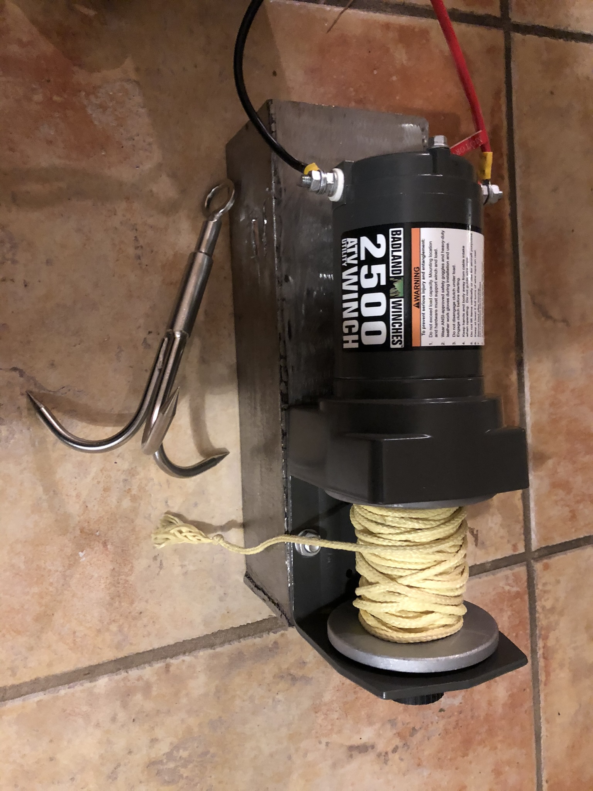

Completed winch-based mechanical rig.
Click any thumbnail to view it larger.
Project Overview
Packaging a high-load winch into a compact experimental rig.
This project grew out of my earlier wearable fabrication experiments. I built a compact steel structure around a 2,500 lb ATV utility winch and integrated the rope path, guide hardware, hook attachments, and power wiring into a single assembly.
The project was primarily an exercise in metal fabrication, mechanical packaging, and integrating off-the-shelf hardware into a custom structure. It also pushed me to think about load paths, mounting, accessibility, and component placement in a much heavier mechanical system than my earlier builds.
What I worked on
- Fabricated the welded steel mounting structure.
- Integrated the ATV winch, rope spool, and guide hardware.
- Packaged the power and control wiring with the mechanical assembly.
- Iterated on the structure and tested the completed system.
Testing